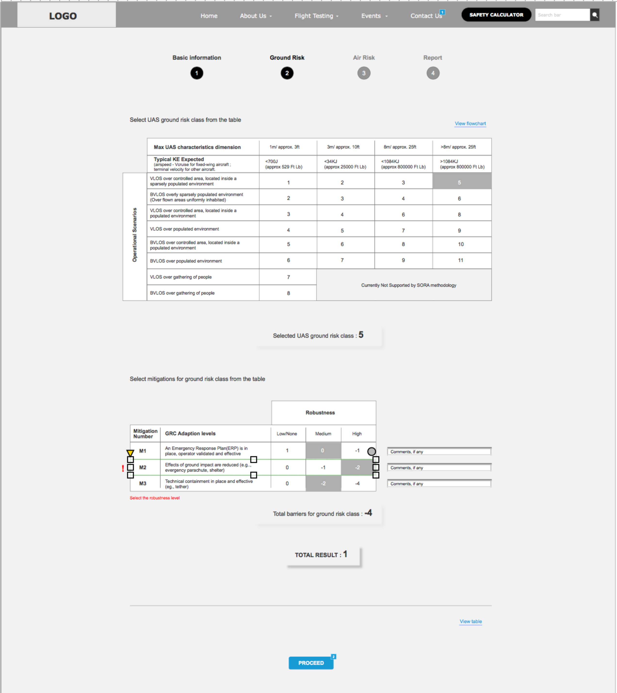
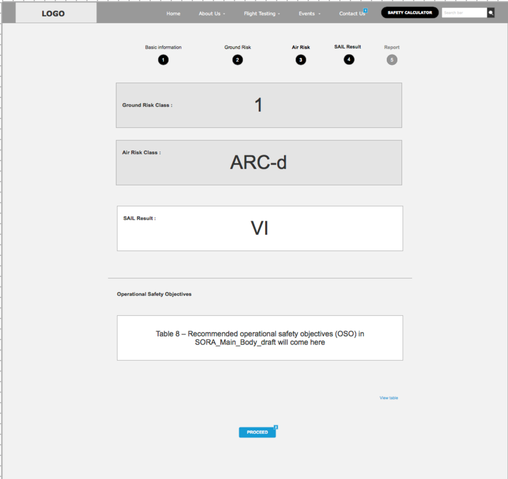
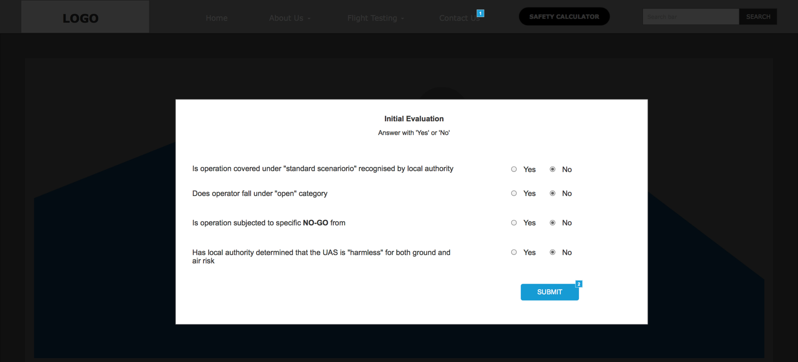
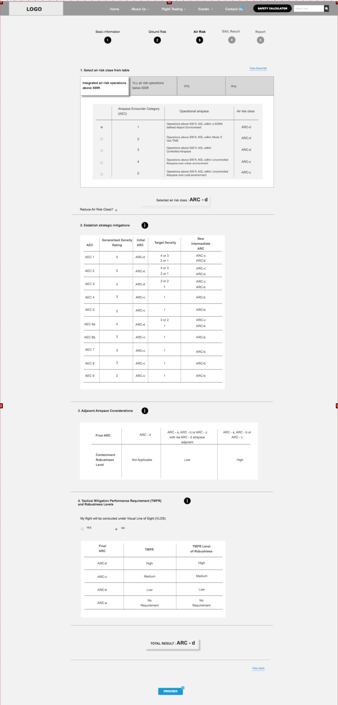
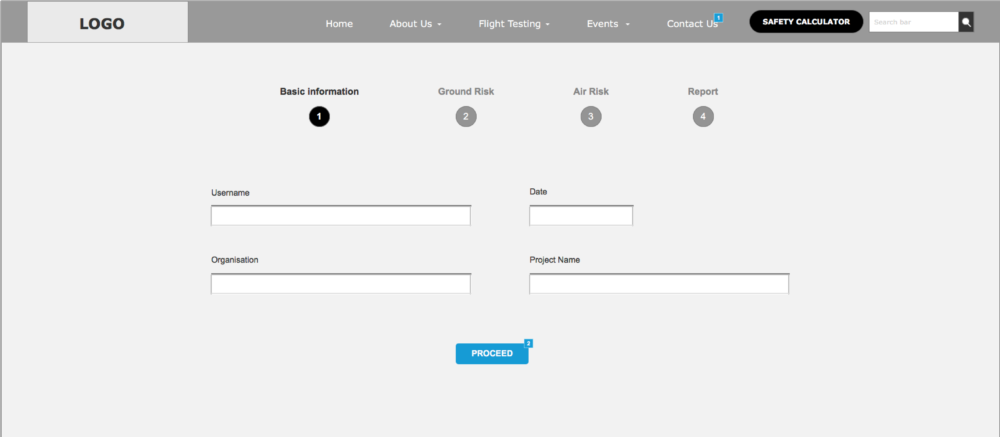
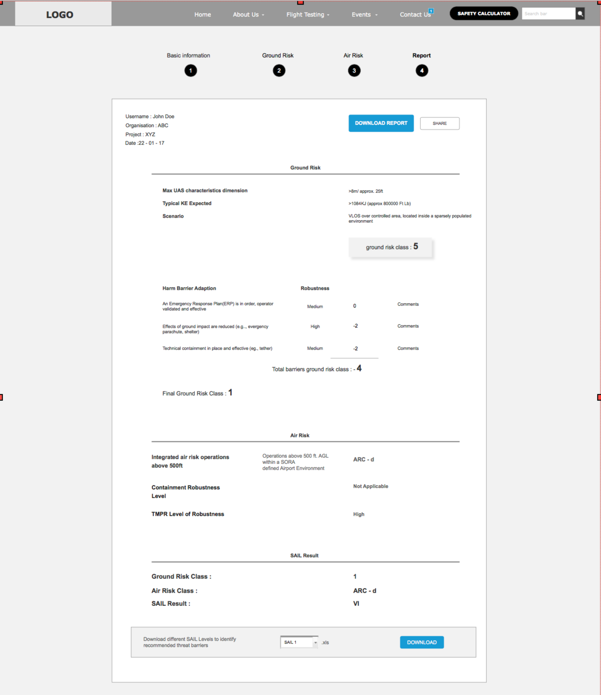

Wireframes
With the knowledge I gained from the SMEs and the Stakeholders i began to redesign the wireframes with more of a focus on surfacing the contextual annexed information when it was required as well as making the wizard flow non linear to allow for users of multiple skill levels to use the tool how they wanted to.
 Prototype
I made a functional prototype and presented it to the client so they understood the new flow and the new functionality. The new approach was approved.
   User Flows